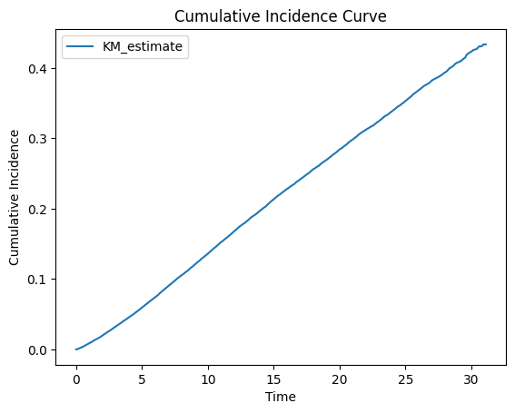

StringIO#
import pandas as pd
from lifelines import KaplanMeierFitter
from lifelines import CoxPHFitter
import matplotlib.pyplot as plt
# Import the CSV file
data = pd.read_csv('~/dropbox/0g.κοσμογονία,γ/2.pantheon/ds4ph.capstone.csv')
# Create Kaplan-Meier survival curves
kmf = KaplanMeierFitter()
# Define the survival time and event columns
time_column = 'years' # Replace with the actual column name in your CSV
event_column = 'died' # Replace with the actual column name in your CSV
# Fit the Kaplan-Meier estimator
kmf.fit(data[time_column], data[event_column])
# Plot the cumulative incidence (1 - KM)
cumulative_incidence = 1 - kmf.survival_function_
cumulative_incidence.plot()
plt.xlabel('Time')
plt.ylabel('Cumulative Incidence')
plt.title('Cumulative Incidence Curve')
plt.show()
# Perform Cox regression
cph = CoxPHFitter()
# Define the covariate columns
covariates = ['age', 'female', 'racecat', 'dm', 'htn', 'acr', 'hba1c', 'egfr', 'sbp'] # Replace with the actual column names in your CSV
# Fit the Cox regression model
cph.fit(data, duration_col=time_column, event_col=event_column, formula='age + female + C(racecat) + dm + htn + acr + hba1c + egfr + sbp')
# Print the summary
print(cph.summary)
# Calculate the number of observations
n_obs = int(cph._model.weights.sum())
print("Number of observations:", n_obs)

coef exp(coef) se(coef) coef lower 95% \
covariate
age 0.078777 1.081963 0.000771 0.077266
female -0.301306 0.739851 0.018590 -0.337742
C(racecat)[T.Hispanic] -0.344334 0.708692 0.026958 -0.397170
C(racecat)[T.Other] -0.588248 0.555299 0.053390 -0.692891
C(racecat)[T.White] -0.096496 0.908014 0.022179 -0.139966
dm 0.449453 1.567455 0.022127 0.406086
htn 0.146603 1.157894 0.018137 0.111055
acr 0.000006 1.000006 0.000002 0.000003
hba1c -0.000007 0.999993 0.000008 -0.000023
egfr -0.004161 0.995848 0.000426 -0.004996
sbp 0.001695 1.001697 0.000189 0.001325
coef upper 95% exp(coef) lower 95% \
covariate
age 0.080288 1.080329
female -0.264871 0.713379
C(racecat)[T.Hispanic] -0.291497 0.672220
C(racecat)[T.Other] -0.483606 0.500128
C(racecat)[T.White] -0.053026 0.869388
dm 0.492821 1.500931
htn 0.182151 1.117456
acr 0.000010 1.000003
hba1c 0.000008 0.999977
egfr -0.003325 0.995016
sbp 0.002066 1.001326
exp(coef) upper 95% cmp to z p \
covariate
age 1.083599 0.0 102.186342 0.000000e+00
female 0.767305 0.0 -16.208079 4.421775e-59
C(racecat)[T.Hispanic] 0.747144 0.0 -12.773099 2.317421e-37
C(racecat)[T.Other] 0.616556 0.0 -11.017953 3.130990e-28
C(racecat)[T.White] 0.948356 0.0 -4.350776 1.356564e-05
dm 1.636927 0.0 20.312733 9.922658e-92
htn 1.199796 0.0 8.083003 6.319122e-16
acr 1.000010 0.0 3.602481 3.151943e-04
hba1c 1.000008 0.0 -0.919880 3.576357e-01
egfr 0.996681 0.0 -9.757646 1.710805e-22
sbp 1.002068 0.0 8.968621 3.002494e-19
-log2(p)
covariate
age inf
female 193.849132
C(racecat)[T.Hispanic] 121.698819
C(racecat)[T.Other] 91.367368
C(racecat)[T.White] 16.169683
dm 302.306658
htn 50.491125
acr 11.631471
hba1c 1.483437
egfr 72.307743
sbp 61.530472
Number of observations: 64899
Here is a basic implementation of a Streamlit app called capstone.py that produces a calculator to estimate the 30-year risk of mortality in healthy living kidney donor candidates:
import pandas as pd
from lifelines import CoxPHFitter
import pickle
# Import the CSV file
data = pd.read_csv('~/dropbox/0g.κοσμογονία,γ/2.pantheon/ds4ph.capstone.csv')
# Perform Cox regression
cph = CoxPHFitter()
# Define the covariate columns
covariates = ['age', 'female', 'racecat', 'dm', 'htn', 'acr', 'hba1c', 'egfr', 'sbp']
# Fit the Cox regression model
cph.fit(data, duration_col='years', event_col='died', formula=' + '.join(covariates))
# Save the trained model and beta coefficients
with open('model.pkl', 'wb') as file:
pickle.dump(cph, file)
with open('betas.pkl', 'wb') as file:
pickle.dump(cph.summary['coef'].values, file)
# Print the summary
print(cph.summary)
# Calculate the number of observations
n_obs = int(cph._model.weights.sum())
print("Number of observations:", n_obs)
coef exp(coef) se(coef) coef lower 95% \
covariate
age 0.078777 1.081963 0.000771 0.077266
female -0.301306 0.739851 0.018590 -0.337742
racecat[T.Hispanic] -0.344334 0.708692 0.026958 -0.397170
racecat[T.Other] -0.588248 0.555299 0.053390 -0.692891
racecat[T.White] -0.096496 0.908014 0.022179 -0.139966
dm 0.449453 1.567455 0.022127 0.406086
htn 0.146603 1.157894 0.018137 0.111055
acr 0.000006 1.000006 0.000002 0.000003
hba1c -0.000007 0.999993 0.000008 -0.000023
egfr -0.004161 0.995848 0.000426 -0.004996
sbp 0.001695 1.001697 0.000189 0.001325
coef upper 95% exp(coef) lower 95% exp(coef) upper 95% \
covariate
age 0.080288 1.080329 1.083599
female -0.264871 0.713379 0.767305
racecat[T.Hispanic] -0.291497 0.672220 0.747144
racecat[T.Other] -0.483606 0.500128 0.616556
racecat[T.White] -0.053026 0.869388 0.948356
dm 0.492821 1.500931 1.636927
htn 0.182151 1.117456 1.199796
acr 0.000010 1.000003 1.000010
hba1c 0.000008 0.999977 1.000008
egfr -0.003325 0.995016 0.996681
sbp 0.002066 1.001326 1.002068
cmp to z p -log2(p)
covariate
age 0.0 102.186342 0.000000e+00 inf
female 0.0 -16.208079 4.421775e-59 193.849132
racecat[T.Hispanic] 0.0 -12.773099 2.317421e-37 121.698819
racecat[T.Other] 0.0 -11.017953 3.130990e-28 91.367368
racecat[T.White] 0.0 -4.350776 1.356564e-05 16.169683
dm 0.0 20.312733 9.922658e-92 302.306658
htn 0.0 8.083003 6.319122e-16 50.491125
acr 0.0 3.602481 3.151943e-04 11.631471
hba1c 0.0 -0.919880 3.576357e-01 1.483437
egfr 0.0 -9.757646 1.710805e-22 72.307743
sbp 0.0 8.968621 3.002494e-19 61.530472
Number of observations: 64899
import streamlit as st
import pandas as pd
import numpy as np
import pickle
# Load the model and beta coefficients
with open('model.pkl', 'rb') as file:
model = pickle.load(file)
with open('betas.pkl', 'rb') as file:
betas = pickle.load(file)
# Define a function to calculate the risk of mortality
def calculate_risk(demographic, history, exam, labs):
# Combine all input features into a single array
features = np.concatenate([demographic, history, exam, labs])
# Calculate the log hazard ratio using the beta coefficients
log_hr = np.sum(features * betas)
# Calculate the absolute risk using the Cox proportional hazards formula
risk = np.exp(log_hr) * baseline_risk
return risk
# Define the baseline risk for a healthy individual
baseline_risk = 0.0028
# Define the input fields for the calculator
age = st.slider('Age', 18, 100, 5)
female = st.selectbox('Sex', ['Male', 'Female'])
racecat = st.selectbox('Race', ['Hispanic', 'Other', 'White'])
dm = st.checkbox('Diabetes')
htn = st.checkbox('Hypertension')
acr = st.slider('ACR', 0.0, 100.0, 0.0)
hba1c = st.slider('HbA1c', 0.0, 20.0, 5.0)
egfr = st.slider('eGFR', 0, 200, 100)
sbp = st.slider('SBP', 50, 250, 120)
# Convert categorical variables to one-hot encoding
if female == 'Male':
sex_male = 1
else:
sex_male = 0
if racecat == 'Hispanic':
race_hispanic = 1
race_other = 0
race_white = 0
elif racecat == 'Other':
race_hispanic = 0
race_other = 1
race_white = 0
else:
race_hispanic = 0
race_other = 0
race_white = 1
# Combine all input features into a single array
demographic = np.array([age, sex_male, race_hispanic, race_other, race_white])
history = np.array([int(dm), int(htn)])
exam = np.array([sbp])
labs = np.array([acr,hba1c, egfr]) # Add any additional lab features here if needed
# Calculate the risk of mortality using the input features
risk = calculate_risk(demographic, history, exam, labs)
# Display the calculated risk
st.write('30-Year Risk of Mortality:', risk)
2023-05-17 00:03:07.573
Warning: to view this Streamlit app on a browser, run it with the following
command:
streamlit run /Users/d/Library/Python/3.11/lib/python/site-packages/ipykernel_launcher.py [ARGUMENTS]